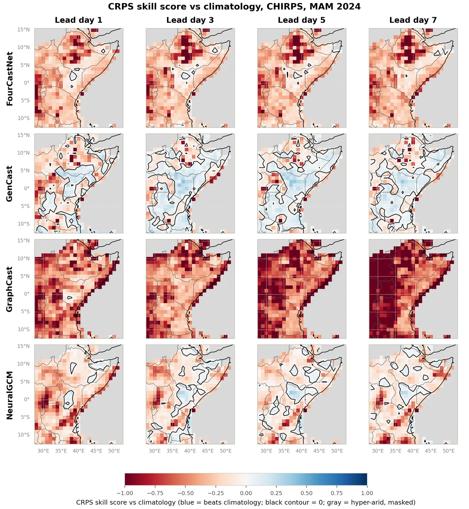
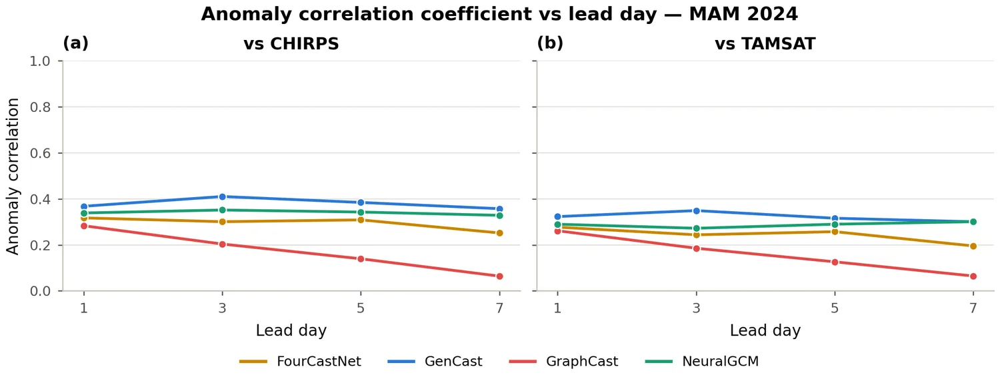
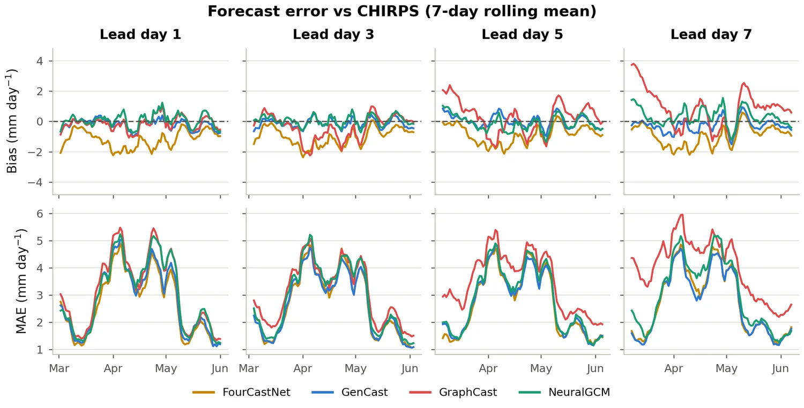
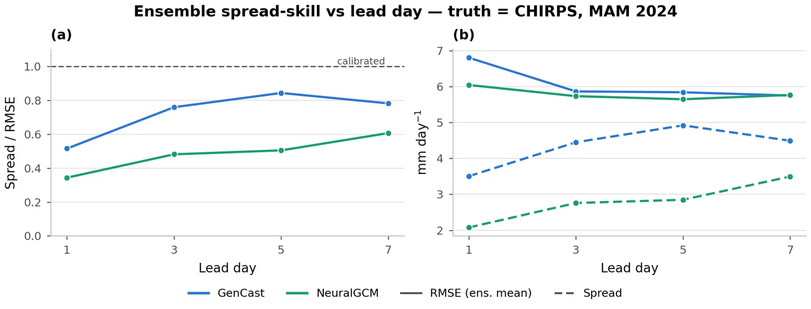
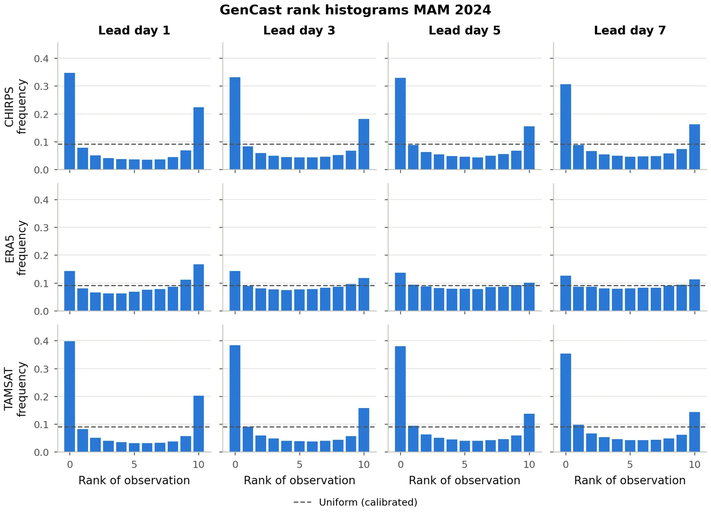

Scorecard — MAM 2024, vs CHIRPS, lead day 1 unless noted
| Model | Type | CRPS / MAE ↓ (mm day⁻¹) | ACC ↑ (day 1 → 7) | Bias signature | Event CSI ↑ | Beats climatology? |
|---|---|---|---|---|---|---|
| GenCast | ensemble (diffusion) | 2.25 (fair CRPS; flattest with lead) | 0.37 → 0.36 (best, most stable) | ≈ unbiased (−0.19) | 0.54 | Yes — equatorial belt, holds to day 7 |
| NeuralGCM | ensemble (hybrid physics–ML) | 2.50 (fair CRPS; improves with lead, 2.16 at day 5) | 0.34 → 0.33 (stable) | ≈ unbiased (+0.08) | 0.53 | No — domain-mean CRPSS < 0 at every lead |
| FourCastNet | deterministic | 2.66 (MAE) | 0.32 → 0.25 | Dry (−1.18) | 0.49 | Mixed — negative over northern Horn |
| GraphCast | deterministic | 3.15 (MAE) | 0.28 → 0.06 (fastest decay) | Wet drift (−0.14 → +0.84) | 0.51 | No — mostly worse, worsens with lead |
| Climatology | 21-yr baseline | reference | — | — | — | reference |
Verdict: GenCast is the strongest system across the benchmark, but its ensemble remains overconfident. No model consistently outperforms climatology outside the equatorial belt.
1. GenCast is the strongest overall
GenCast has the lowest CRPS, the highest and most stable anomaly correlation, and the best-calibrated exceedance probabilities. It is also the only model to consistently beat climatology, mainly over the equatorial belt. NeuralGCM, the other ensemble system, comes closest, but its domain-mean CRPSS remains negative at every lead, with only scattered areas of positive skill near the equator.

Blue areas indicate positive CRPSS, meaning the model beats the CHIRPS climatology baseline. GenCast maintains a coherent equatorial band of positive skill through lead day 7. NeuralGCM shows more fragmented positive skill, while GraphCast and FourCastNet are mostly worse than climatology. See the full set in the Skill vs climatology tab.
2. All models have limited deterministic skill
For all four models, anomaly correlation remains below the 0.6 "useful skill" guide at every lead. Skill also declines with lead time for the deterministic models, highlighting the difficulty of forecasting convection-dominated rainfall during the long-rains season.

No model reaches the ACC = 0.6 reference line at any lead. GenCast has the highest and most stable ACC curve, with NeuralGCM close behind. GraphCast shows the sharpest degradation, falling substantially by lead day 7. See the full set in the Deterministic tab.
3. Distinct, stable bias signatures
The models show clear and stable bias signatures. FourCastNet is systematically dry at about −1.2 mm day⁻¹, while GraphCast develops a wet bias at longer leads, reaching +0.84 mm day⁻¹ by day 7. GenCast and NeuralGCM remain nearly unbiased in the domain mean.

The figure shows seven-day rolling bias in the top row and MAE in the bottom row, plotted against valid date with one column per lead day. Each model retains a consistent bias signature throughout the season. See the full set in the Deterministic tab.
4. Both ensembles are under-dispersive (overconfident)
GenCast's spread–skill ratio increases from about 0.5 on day 1 to about 0.8 by days 5–7, but it never reaches the calibrated SSR = 1 line. NeuralGCM is even more under-dispersive, rising from roughly 0.22 on day 1 to only about 0.40 by day 7. The U-shaped rank histograms confirm that both ensembles are too narrow, especially at short lead times.

The left panel shows SSR versus lead time for both ensembles, with the under-dispersive region marked below SSR = 1. The right panel separates the two components of SSR: ensemble-mean RMSE and ensemble spread. See the full set in the Probabilistic tab.
5. Results are observation-sensitive
Skill and calibration vary noticeably across CHIRPS, ERA5, and TAMSAT, underscoring the role of observational uncertainty in this data-sparse region.

Against CHIRPS and TAMSAT, GenCast's rank histograms are sharply U-shaped, indicating strong under-dispersion. Against ERA5, the histograms are much flatter, suggesting better apparent calibration. This contrast indicates that GenCast performs more favorably against the reanalysis reference than against the independent gauge–satellite products. See the full set in the Probabilistic tab.